过程: 选择收敛方法
研究 Simulate 提供的不同收敛方法的特征。
“关闭窗口”(Close Window) “拭除未显示的”(Erase Not Displayed)
“拭除未显示的”(Erase Not Displayed) 
 Simulate_Modeling\Convergence
Simulate_Modeling\Convergence
 CAD_GEOM_PLASTIC_CLIP_SIMULATE.PRT
CAD_GEOM_PLASTIC_CLIP_SIMULATE.PRT
|
|
||
 |
Creo Parametric 用户打开 CAD_GEOM_PLASTIC_CLIP.PRT。 | |
|
|
||
-
任务 1. 打开 Simulate 并向模型中添加约束。
1. 启动 Simulate 应用程序。
2. Simulate 应用程序随即打开。零件的材料已被分配。要查看材料分配，请在模型树中展开“材料分配”(Material Assignments)。
3. 右键单击 Material Assign1，然后选择“编辑定义”(Edit Definition)。将出现“材料分配”(Material Assignment) 对话框。
4. 查看材料信息并在完成后单击“确定”(OK)。
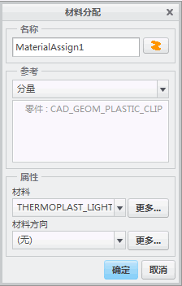5. 由于基础曲面粘贴在壁上，因此它必须在所有自由度中加以约束。要约束基础，选择零件的基础。
6. 在功能区中，选择“主页”(Home) 选项卡。在“约束”(Constraints) 组中单击“位移”(Displacement)
 。
。
7. 将出现“约束”(Constraint) 对话框。如图所示完成字段，然后单击“确定”(OK)。
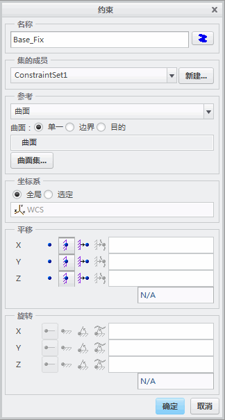
-
任务 2. 将 1 牛顿的总修剪力应用到模型。
1. 在模型上，选择显示的曲面。
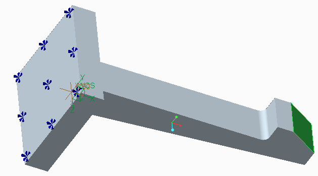
2. 在功能区中，选择“主页”(Home) 选项卡。在“载荷”(Loads) 组中单击“力/力矩载荷”(Force/Moment Load) 。
3. 将出现“力/力矩载荷”(Force/Moment Load) 对话框。在“属性”(Properties) 部分中，单击“高级”(Advanced) 以展开此部分。
4. 如图所示完成字段，然后单击“确定”(OK)。
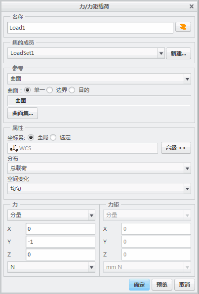
-
任务 3. 定义多通道自适应分析。
1. 在功能区中，选择“主页”(Home) 选项卡。在“运行”(Run) 组中单击“分析和研究”(Analyses and Studies)
 。
。
2. 将出现“分析和设计研究”(Analyses and Design Studies) 对话框。选择“文件”(File) > “新建静态分析”(New Static)。
3. 将出现“静态分析定义”(Static Analysis Definition) 对话框。如图所示完成字段，然后单击“确定”(OK)。
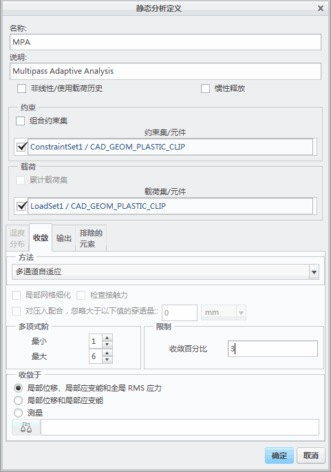
-
任务 4. 定义单通道自适应分析。
1. 在“分析和设计研究”(Analyses and Design Studies) 对话框中，选择“文件”(File) > “新建静态分析”(New Static)。
2. 将出现“静态分析定义”(Static Analysis Definition) 对话框。如图所示完成字段，然后单击“确定”(OK)。
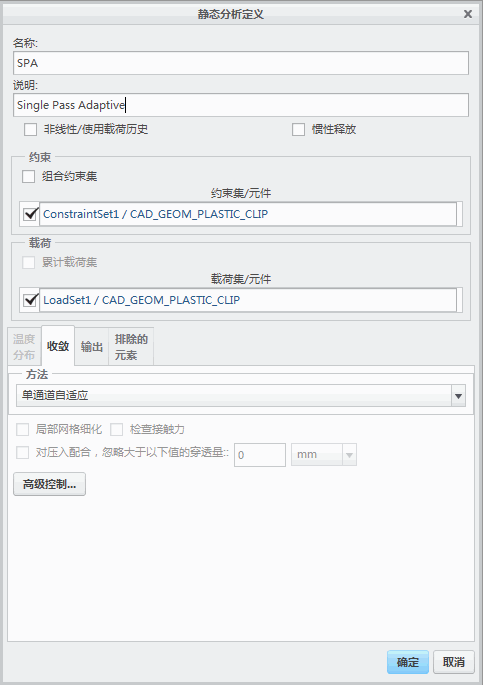
-
任务 5. 定义快速检查分析。
1. 在“分析和设计研究”(Analyses and Design Studies) 对话框中，选择“文件”(File) > “新建静态分析”(New Static)。
2. 将出现“静态分析定义”(Static Analysis Definition) 对话框。如图所示完成字段，然后单击“确定”(OK)。
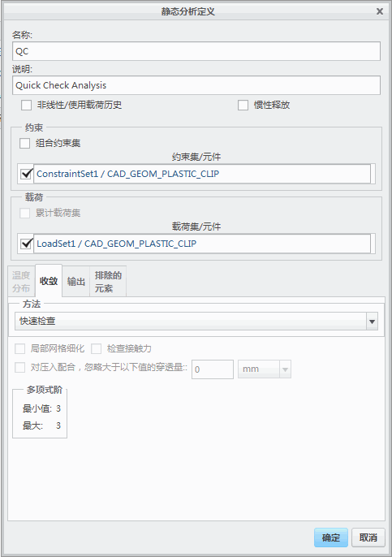
-
任务 6. 定义 P1 分析。
1. 在“分析和设计研究”(Analyses and Design Studies) 对话框中，选择“文件”(File) > “新建静态分析”(New Static)。
2. 将出现“静态分析定义”(Static Analysis Definition) 对话框。如图所示完成字段，然后单击“确定”(OK)。
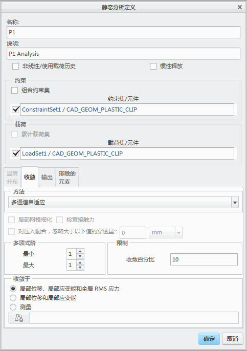3. 分析全部在“分析和设计研究”(Analyses and Design Studies) 对话框中列出，如图所示。
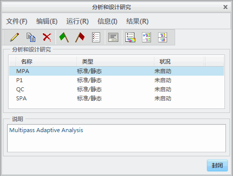
-
任务 7. 创建包含所有分析的批处理文件并从操作系统中执行它。
1. 在“分析和设计研究”(Analyses and Design Studies) 对话框中，选择 MPA。
2. 单击“运行”(Run) > “批处理”(Batch)。
3. 将出现“批处理”(Batch) 对话框。选择将保存文件的位置。在“文件名”(File Name) 字段中，键入 mecbatch。单击“保存”(Save)。
4. 将出现询问“是否进行错误检测?”的“问题”(Question) 对话框。单击“是”(Yes)。
5. 对其余三个分析重复上述步骤。对每个文件使用相同的文件名 mecbatch。对于询问“指定的批处理文件 "mecbatch.bat" 已存在。是否将此设计研究添加到文件?”的每个分析将出现附加“问题”(Question) 对话框。对每个设计研究单击“是”(Yes)。
6. 转到文件 mecbatch.bat 的存储位置。双击文件名。
7. cmd.exe 窗口打开表示文件正在运行中。当窗口关闭时，运行完成。
8. 返回到 Creo Simulate 窗口。“分析和设计研究”(Analyses and Design Studies) 对话框中分析名称旁边的绿色选中标记表示运行已完成，如图所示。
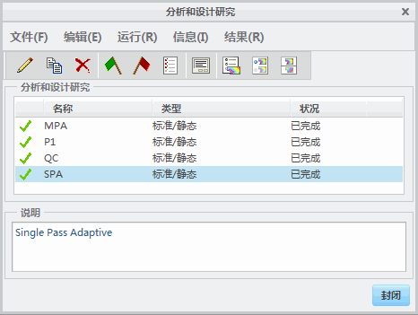
-
任务 8. 查看分析结果。
1. 在“分析和设计研究”(Analyses and Design Studies) 对话框中，选择 MPA。单击“显示研究状况”(Display Study Status)
 。
。
2. 将出现显示分析结果的“运行状况”(Run Status) 对话框，如图所示。
3. 查看结果：
- 收敛误差范数消息。
- 力平衡。
- 测量结果。
- 资源消耗。
完成后单击“关闭”(Close)。
4. 对其余三个分析中的每一个重复上述步骤。
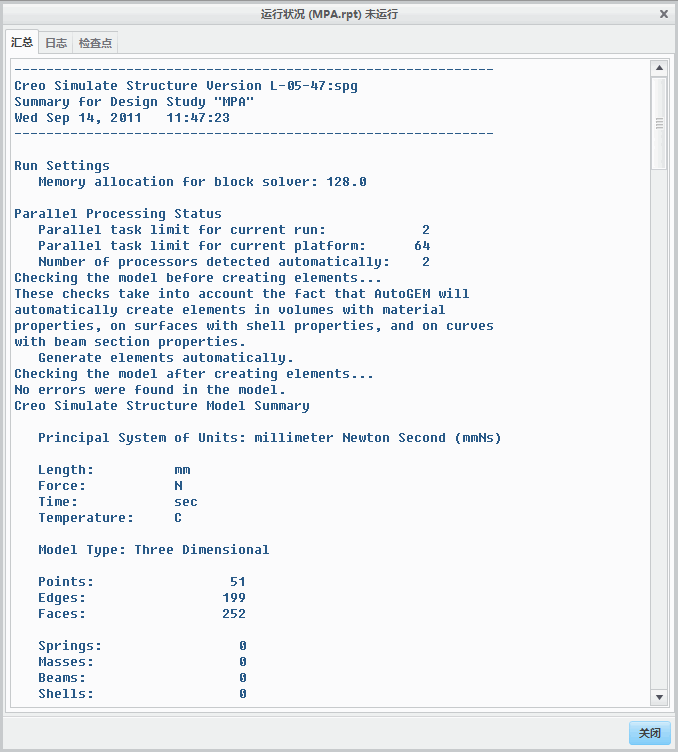
过程就此结束。